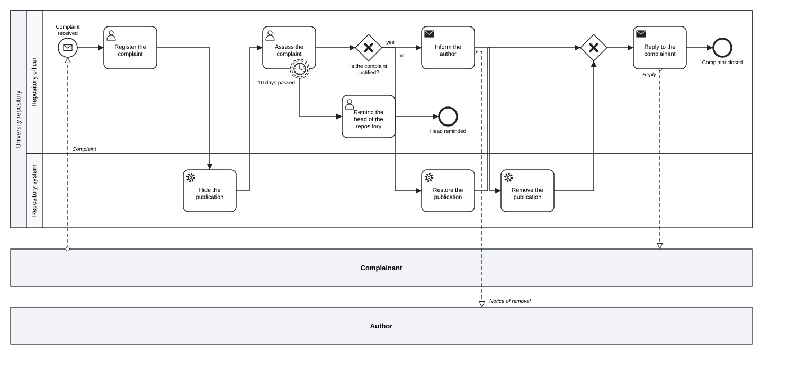

Chapter 14 Working with AI agents
In this chapter you will see why a short text language suits AI agents that write process models · learn what the skill tok-modelling teaches an agent and which files it contains · start the MCP server with tok mcp or tok-mcp and know its tools · configure MCP clients, VS Code and Claude Code, and point other agents to the skill · work without MCP with tok cheatsheet and tok check --json · follow a session from a table of process steps to a checked model and a BPMN file · review what an agent produces, because a clean check is not proof that the model matches reality
An AI agent is a language model that does not only answer but acts: it reads and writes files, runs commands, looks at their output and plans its next step from it. Agents are good at turning a description of a process into a structured model, and they are increasingly used for it. This chapter shows how to give an agent the tok language and the tok tools, and how to check what it produces.
14.1 Why a text language suits agents
An agent asked to produce a BPMN diagram directly has to write XML: hundreds of lines with namespaces, generated identifiers, references between elements and, in the diagram interchange part, coordinates of every shape and every bend of every arrow. Each of these is a place for a mistake that is hard to see and hard to locate, and coordinates are something a language model has no good way to compute.
With tok the work is divided differently. The agent writes a short text that describes only the meaning of the process. The engine checks it, reports each problem with a code and a line number, prints the canonical form and produces the BPMN file with a computed layout. The agent never writes XML and never places a shape. The same features that make tok easy to review for people make it easy to write for agents:
| Feature of tok | What it gives the agent | What it gives you |
|---|---|---|
| one statement per line, one keyword per statement | a mistake concerns one line, and a fix changes one line | you review the model line by line, like text |
| explicit identifiers | references cannot dangle silently: an unknown name is the error R002 with its line |
you refer to elements by name in reviews and in requests for corrections |
| the whole language on one page | the cheat sheet fits into the context of the agent | the same cheat sheet is the appendix of this book |
diagnostics with stable codes, line numbers and --json |
the agent reads the result of a check without guessing | you can follow what the agent fixed and why |
one canonical form (tok fmt) |
the text has one layout, whoever wrote it | the differences between versions are small and readable |
| no coordinates | nothing to draw | the diagram is always drawn the same way |
The division of work is worth keeping in mind through the whole chapter: the agent is responsible for the meaning, the engine for the mechanics, and you for the judgement. The engine can tell the agent that a message flow connects two lanes of one pool; it cannot tell either of you that a step the description calls “automatic” was modelled as a user task.
14.2 The skill tok-modelling
A skill is a folder of instructions and reference material that an agent loads when a task matches its description. The skill tok-modelling teaches an agent to model processes in tok. Its files are:
| File | Content |
|---|---|
SKILL.md |
the instructions: when the skill applies, which tools to use, the workflow, the rules models most often break, and a summary of every layer of the language |
references/cheatsheet.md |
the language on one page, read before writing the first line |
references/spec.md |
the specification, for the sections the cheat sheet does not cover |
references/feel.md |
FEEL in tok |
references/diagnostics.md |
every diagnostic code with its explanation, in English and Polish |
SKILL.md begins with a front matter that names the skill and describes when to use it: for .tok files, for turning a process description such as a table of steps into a model, for decision models, and for executable or simulated processes. Agent tools that support skills read this description and load the skill when a task matches it.
The workflow the skill prescribes is the one an experienced modeller follows:
- Read the process description completely: the participants, the roles, the steps, the decisions, the deadlines, the messages to other organisations and the documents.
- Write a mapping first: a file
mapping.mdwith one row per step, giving the tok element (kind and identifier), the lane, the words of the description that justify the choice, and any doubts. The person the agent works for reviews the model through this table. - Write the
.tokfile: one statement per line, short ASCII identifiers, labels in the language of the description, the headertok 1.0for a new model. - Check the model and fix every error, then check again until there are none; fix or justify the warnings.
- Format it into canonical form.
- Export what the task asks for: the BPMN file, the picture, the files for Camunda.
- Report briefly: the files created, the number of elements, the decisions that were ambiguous.
The skill ends its workflow with the sentence that matters most for the person who uses it: no errors means the model follows the rules of the notation, not that it matches the description; the mapping is there for that. It then lists the rules models most often break: a message flow connects different pools, a splitting gateway is labelled with a question and its flows with the answers, branches are joined with the same kind of gateway they were split with, deadlines during a task are boundary events and not extra gateways, an event sub-process has no incoming or outgoing flows, and a flow line with a label has exactly one arrow.
A skill is plain text. You can read it before you let an agent use it, and you can extend it: an institution can add its own naming rules, its own roles or its own patterns. Writing a good skill is a way of handing an agent the knowledge of your organisation.
14.3 The MCP server
The Model Context Protocol (MCP) is a standard way for an agent application to call tools of local programs. The MCP server of tok gives an agent the engine as tools: it checks a model and returns the diagnostics, prints the canonical form, exports BPMN, SVG, DMN and form files, imports BPMN and DMN, simulates and evaluates decisions, checks BPMN XML files from any tool (check_bpmn), and returns the language reference. The skill uses the server when the agent has it, and the tok command otherwise.
14.3.1 Starting the server
There are two ways to run it. Both speak MCP over standard input and output (the stdio transport) and serve one client until it closes the connection:
tok mcpfrom the Python package. If you have installed tok withpip install tok-lang, you already have the server: the commandtok mcpstarts it. This is the simplest way on any computer with Python.tok-mcp, a separate program, from crates.io (cargo install tok-mcp) or from the release archives of the repository. It is useful where you do not want Python, for example in a container.
tok mcp --version and tok-mcp --version print the version of the server. You do not normally start the server yourself: the agent application starts it when it needs it, using the configuration below.
14.3.2 Tools
Every tool that reads a document takes it either as text (the tok text) or as path (a .tok file the server reads), never both. lang (en or pl) chooses the language of the diagnostics and reports.
| Tool | Arguments | Result |
|---|---|---|
check |
text or path, lang, level (basic, analytic, full), class (descriptive, analytic, common-executable, full), bpmn (default true: also the BPMN 2.0 rules) |
{"errors", "bpmn_class", "diagnostics"}, as tok check --json |
fmt |
text or path, lang |
{"text"}: the canonical form |
export |
text or path, formats (a list of bpmn, svg, dmn, forms; all when left out), name, sidecar, lang |
{"files": {NAME: CONTENT}}: the files tok export writes |
import |
xml or path, format (auto, bpmn, dmn), flow_ids, layout |
{"format", "text", "warnings", "layout"}: the tok document, what was not kept, and for BPMN the layout sidecar |
sim |
text or path, cases, seed, and the booleans log, cases_table, csv, xes |
{"kpi", "report"} and, on request, the event log and the table of cases |
eval |
text or path, decision, values (an object input name → value), lang |
{"value"}: the value of the decision |
reference |
topic: cheatsheet (default), spec, diagnostics, feel, cli |
{"text"}: the reference document |
The same reference documents are also available as resources, for clients that attach resources to the context: tok://reference/cheatsheet, tok://reference/spec, tok://reference/diagnostics, tok://reference/feel and tok://reference/cli.
Three properties of the server are worth knowing:
- It writes nothing.
fmtandexportreturn the text and the files; the agent writes them with its own file tools. This keeps every change to your files visible in the agent’s normal workflow. - Two kinds of errors. A problem the agent can fix (a document with errors, an unknown decision, an argument of the wrong type) is a tool error with an explanation; a malformed request is a protocol error.
checkis the exception: a document with errors is its normal result, witherrorsgreater than 0. - No network, the rights of its user. The server opens no network connection and runs with the rights of the user who starts it; it reads the files named by
pathand the layout sidecars next to them. A client that lets an agent call tools should still show you the calls, as MCP recommends.
To try the server by hand, the MCP Inspector of the protocol project starts it and lists its tools: npx @modelcontextprotocol/inspector tok mcp.
14.4 Configuring clients
14.4.1 Clients with an mcpServers configuration
Many agent applications read a JSON configuration with an object mcpServers. The server needs no environment and, with the Python package, one argument:
With the separate program, the command is "tok-mcp" without arguments. When the program is not on the PATH, give its full path; on Windows, for example, "command": "C:\\tools\\tok\\tok-mcp.exe". Paths given to the tools are read relative to the working directory of the server, which is the folder the client starts it in; give the agent absolute paths when in doubt.
14.4.2 VS Code
VS Code reads the MCP servers of a workspace from .vscode/mcp.json, with the key servers and the type of the transport:
Commit the file with the project, and everyone who opens the folder gets the server for the agent of VS Code. The VS Code extension of tok (Chapter 12) is independent of it: the extension serves you while you edit, the MCP server serves the agent.
14.4.3 Claude Code
For Claude Code, the repository tok-agent (https://github.com/tok-lang-bpm/tok-agent) is a plugin marketplace with a plugin that brings both the skill and the MCP server. In Claude Code:
/plugin marketplace add tok-lang-bpm/tok-agent
/plugin install tok@tok-lang-bpmThe first command adds the marketplace (named tok-lang-bpm), the second installs the plugin tok from it; the skill is then available as tok:tok-modelling, with its companion tok:bpmn-modelling for agents that write BPMN 2.0 XML directly, and the plugin starts the MCP server with tok mcp. Install the engine on the computer first (pip install tok-lang), so that the tools of the server and the commands of the skill can run. To add only the MCP server to Claude Code, without the plugin, the command line of Claude Code takes the command of the server after --: claude mcp add tok -- tok mcp.
14.4.4 Other agents
Agents that read skills in the format of a folder with SKILL.md can use the skill folder of the tok-agent repository, plugins/tok/skills/tok-modelling, directly: copy it to the place where your agent looks for skills, or point the agent to it. The README of tok-agent gives the MCP configuration for other clients (Claude Desktop, Cursor, Gemini CLI, Codex CLI), and its file templates/AGENTS.md is a ready section for the AGENTS.md of a project. Agents that read an AGENTS.md file at the root of a project (a file of standing instructions read at the start of each session) need only a few lines there that point to the skill files and state the rules of the project, for example:
## Process models
Process models in this repository are tok files (`models/*.tok`).
Before writing or changing one, read `skills/tok-modelling/SKILL.md` and
`skills/tok-modelling/references/cheatsheet.md`, and follow their workflow.
Check every model with `tok check FILE --json` until it has no errors,
format it with `tok fmt FILE -w`, and never edit the `.bpmn` files by hand:
export them with `tok bpmn FILE`.Most agents can also use an MCP server; configure it as above where the agent supports it.
14.5 Working without MCP
An agent that can run commands in a shell needs no MCP server. Two commands give it everything:
tok cheatsheetprints the one-page summary of the language. Put it into the context of the agent, or tell the agent to run it before writing the first line. It begins like this:# tok 1.0 — cheat sheet One statement per line. Blocks by indentation (spaces). `#` starts a comment. Every statement starts with a keyword. Identifiers: `[A-Za-z_][A-Za-z0-9_-]*`, unique. Labels: "quoted text".tok check FILE --jsonprints the diagnostics in a form a program reads without parsing text. The agent reads the code, the line and the identifier of each diagnostic, fixes the line and runs the check again:
With tok fmt FILE -w, tok bpmn FILE, tok svg FILE, tok export FILE -o DIR, tok sim FILE --seed N and tok eval FILE DECISION name=value … the agent has every operation of the MCP server. If the agent can run neither the server nor the command, it can still write a model by the cheat sheet, and it should then say clearly that the model has not been checked.
14.6 A session: from a table of steps to a BPMN file
The following session shows the workflow on a small but realistic task. A university repository receives complaints about publications that may infringe copyright. The person in charge writes the procedure as a table and asks an agent, which has the skill and the MCP server, to model it.
| # | Step | Who |
|---|---|---|
| 1 | A complainant sends a complaint about a publication by e-mail. | complainant |
| 2 | The repository officer registers the complaint in the repository system. | repository officer |
| 3 | The system hides the publication automatically until the complaint is resolved. | repository system |
| 4 | The officer assesses whether the complaint is justified. If the assessment is not finished within 10 days, the officer reminds the head of the repository; the assessment continues. | repository officer |
| 5 | If the complaint is justified, the officer informs the author that the publication will be removed, and the system removes it. | repository officer, system |
| 6 | If the complaint is not justified, the system restores the publication. | repository system |
| 7 | In both cases the officer replies to the complainant, and the complaint is closed. | repository officer |
The mapping. The agent reads the table and first writes mapping.md. Its rows record decisions such as these: the complainant and the author are outside the university, so they are pools without a block, black boxes that only exchange messages; the officer and the system are lanes of the repository’s pool; step 1 is a message start event, because the process begins when the e-mail arrives; step 3 says “automatically”, so it is a service task in the lane of the system; the 10-day reminder of step 4 happens while the assessment continues, so it is a non-interrupting boundary timer; steps 5 and 6 are the two answers of an exclusive gateway, joined again before step 7. One row records a doubt: the table does not say how the officer reminds the head of the repository.
The first check. The agent writes complaint.tok and calls check. The answer contains one error (the diagnostics are shown here as tok check prints them; the tool returns the same as JSON):
complaint.tok:35: error R022: message flow register -> hide must connect two different pools
complaint.tok: 1 error(s), 0 warning(s), 0 note(s)The agent had written a message flow from the registration to the hiding of the publication, as if the officer sent a message to the system. Both lanes belong to one pool, and within a pool the order of work is a sequence flow. The agent removes the message flow; the sequence flow register -> hide is already in the chain of flows.
The second check. Now the BPMN rules run, and they find a warning:
complaint.tok:9: warning W054: message task or event without a message flow in a model with several pools (remind)
complaint.tok: 0 error(s), 1 warning(s), 0 note(s)The agent had made the reminder a send task with a message, but the head of the repository is not a participant of the model, so the message goes nowhere. This is the doubt from the mapping, and the warning makes it visible. Two readings are possible: the head is a separate participant (a third black-box pool with a message flow), or the reminder is internal work of the officer. The agent chooses the second, changes the line to a user task user remind "Remind the head of the repository", and writes the choice and its reason into the mapping, so that the person reviewing it can disagree.
The third check is clean:
complaint.tok: 0 error(s), 0 warning(s), 0 note(s)The agent then formats the file and exports the diagram:
tok fmt complaint.tok -w
tok bpmn complaint.tok
BPMN: complaint.bpmn
tok svg complaint.tok
SVG: complaint.svgThe result is the model below. It is the file 14-copyright-complaint.tok of this book.
tok 1.0 "Copyright complaint in the university repository"
pool repository "University repository"
lane officer "Repository officer"
start received "Complaint received" message="Complaint"
user register "Register the complaint"
user assess "Assess the complaint"
boundary reminder "10 days passed" noninterrupting on=assess timer=P10D
user remind "Remind the head of the repository"
end reminded "Head reminded"
xor justified "Is the complaint justified?"
send inform "Inform the author" message="Notice of removal"
xor merge
send reply "Reply to the complainant" message="Reply"
end closed "Complaint closed"
lane system "Repository system"
service hide "Hide the publication"
service remove "Remove the publication"
service restore "Restore the publication"
pool complainant "Complainant"
pool author "Author"
flow received -> register -> hide -> assess -> justified
flow justified -> inform "yes"
flow justified -> restore "no"
flow inform -> remove -> merge
flow restore -> merge -> reply -> closed
flow reminder -> remind -> reminded
message complainant -> received "Complaint"
message inform -> author "Notice of removal"
message reply -> complainant "Reply"
Figure 14.1: The copyright complaint, modelled from the table of steps and checked by the engine.
Download the model (.tok) Download the BPMN export (.bpmn)
Its report to the person is short: the files mapping.md, complaint.tok, complaint.bpmn and complaint.svg; three pools, two lanes, fourteen flow nodes in the repository’s process; one ambiguous point, the reminder, modelled as internal work of the officer.
Notice what the engine contributed. It found the message flow between lanes, which a reader of the XML might have missed, and it turned an unstated assumption about the reminder into a warning with a line number. Notice also what it could not contribute. Whether the hiding of the publication really happens before the assessment, whether the author is informed before or after the removal, whether “the system removes it” might rather be a decision of a person: these are questions about the procedure, and only someone who knows it can answer them.
14.7 Reviewing what an agent produces
An agent can be wrong in a convincing way. A model without errors and with a clean diagram can still have the wrong kinds of tasks, the wrong kind of boundary event or a missing branch. A clean check is not a proof that the model matches reality. It proves that the model follows the rules of BPMN and of tok; whether it says what the description says is for you to judge.
A review in four passes covers most of what goes wrong:
- Participants and roles. Do the pools and lanes correspond to the description? Are outside parties black-box pools? Is every element in the lane of the role that performs the step?
- Kinds of elements. For each step, compare the keyword (
user,service,manual,rule,send, …) with the words of the description: “in the system” points to a user task, “automatically” to a service task, “face to face” or “on paper” to a manual task, “strictly by a table of rules” to a business rule task. - The flow. Walk the flow lines from the start to every end. Are splits and joins of the same kind? Does every loop return to the right place?
- Exceptions and messages. Are boundary events on the right activities, and are they interrupting or non-interrupting as the description says? Does every message of the description have a message flow?
The mapping makes this review fast, because every choice is written next to the words that justify it. When you find a mistake, ask for a correction precisely: name the step, what is wrong, what it should be and why, quoting the description. “Step 4: the reminder must not stop the assessment, because the description says the assessment continues; make the boundary event non-interrupting” leads to the fix you want. “Fix the model” leads to the fixes the agent thinks of.
A few further habits help:
- Keep the model in version control. Each change by the agent is then a small diff of text that you can read and revert. The canonical form keeps the diffs small.
- Keep a record of the requests. What you asked the agent to do is part of the documentation of the model, and some institutions require you to disclose generated content.
- Do not put personal data into requests. Process models describe roles, not people.
- Check the executable layer and the simulation separately. An executable model is tested by running it (Chapter 10); a simulation by checking its assumptions and its arithmetic (Chapter 11). Neither is established by a clean check.
Exercises
Exercise 14.1
- Read the skill. Read
SKILL.mdof the skilltok-modellingbefore using it. Which three rules in its list of frequent mistakes would you have broken yourself when you started with BPMN? Add one rule of your own organisation to a copy of the skill. - Configure a client. Configure the MCP server in an agent application you use, with
tok mcportok-mcp. Ask the agent to call the toolreferenceand to summarise the header line of a tok document. Then ask it to check14-copyright-complaint.tokwith the toolcheckand report the BPMN conformance class. - A session of your own. Write a table of six to ten steps for a procedure you know, with at least one decision, one deadline and one message to an outside party. Let an agent model it with the skill, following the workflow of this chapter. Note every diagnostic the agent met on the way, and classify each as a mistake of notation or a mistake of understanding.
- Review. Review the model of exercise 3 in the four passes. Write at least two precise requests for corrections, quoting your table, and check the result again.
- Without MCP. Repeat a short session with an agent that has only a shell: give it the output of
tok cheatsheetand tell it to usetok check --json. Compare the number of steps and the result with the session that used the MCP server. - Find what the check cannot. Take the final model of the copyright complaint and change it so that it still checks without errors but no longer matches the table of steps (for example, make the reminder interrupting). Give the changed model to a colleague, or to an agent, with the table, and ask for a review. Is the change found?